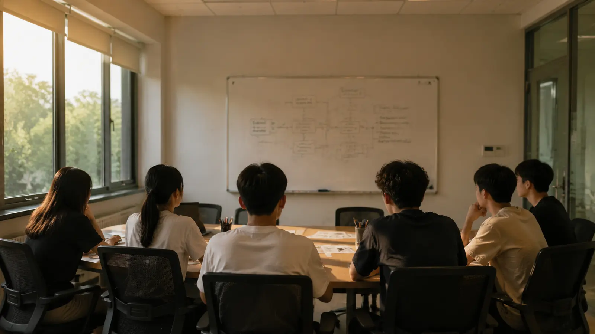

首页 › 组织架构 › 策划部
策划部
活动创新与落地执行核心部门
部门简介
策划部是科联活动创新与落地执行的核心部门，主要负责全院科创、创业类品牌活动的整体策划、流程设计、落地统筹与活动优化，是科创文化活动的主要发起与执行主体。
主要工作事项
活动方案策划——围绕科技创新、创业教育、经验交流、科普宣传等方向，负责科创沙龙、创业分享会、科创经验交流会、科技成果展示、校园科技节等院级科创活动的主题构思、方案撰写、流程细化、环节设计，结合电子工程专业特色打造专属科创活动体系。
活动落地统筹——负责活动前期场地申请、人员分工、流程排布、应急预案制定，中期现场统筹、秩序维护、环节衔接，后期活动复盘、资料汇总、效果总结，保障各类活动有序、高质量落地。
活动创新优化——常态化调研院内学生科创需求，结合科创热点更新活动形式，优化活动内容，打破传统单一宣讲模式，设计互动研讨、项目推演、作品路演、经验对谈等多元化活动形式，提升活动吸引力与实效性。
大型活动协办——配合学校、学院开展紫荆科技节、创新创业集市、科创成果展等大型校级、院级活动，承接活动分项策划与落地工作，助力学院科创品牌建设。
活动方案存档
2026 年度活动方案归档情况。
| 方案名称 | 版本 | 状态 |
|---|---|---|
| 春季硬件培训班课程方案 | V1 | 已执行（2026-05） |
| 三下乡动员会活动方案 | V1 | 已执行（2026-07-08） |
| 青云村科技支农活动方案 | V2 | 未执行 |
| 青云村科技支农活动方案 | V3 | —— |
（注：V2 之后没有 V3。审批记录显示 V3 从未被提交。）
V2 方案活动内容包括：农业设备基础维护、智慧农业示范点参观、村民走访、科普课堂——方案未执行。
